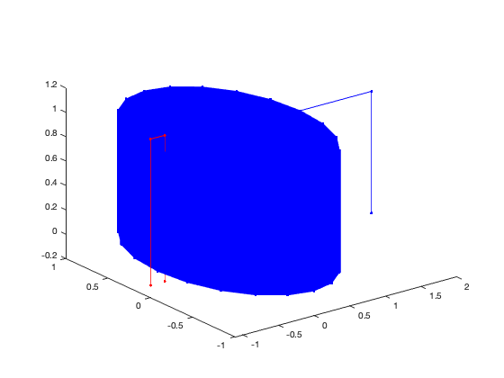

clear all ;
t=[0:0.05:10000];
x=cos(2*pi*t);
y=sin(2*pi*t);
z=t/t(end);
x=[x 2 2];
y=[y 0 0];
z=[z 1 0];
plot3(x,y,z,'-b.')
hold on
x2=[-0.9 -0.9 -1.1 -1.1];
y2=[0 0 0 0];
z2=[-0.1 1.1 1.1 -0.1];
plot3(x2,y2,z2,'-r.')
P = [ x ; y ; z ] ;
Q = [ x2; y2; z2 ] ;
tic
[L,E] = lk( P, Q )
toc
fprintf('L = %d, err = %g\n', L(1,2), E(1,2) ) ;
if false
boh1=[x;y;z]';
boh2=[x2;y2;z2]';
s1=max(size(boh1));
s2=max(size(boh2));
nc=2;
nf='helix.txt';
save(nf,'nc','-ascii');
save(nf,'s1','-ascii','-append');
save(nf,'boh1','-ascii','-append');
save(nf,'s2','-ascii','-append');
save(nf,'boh2','-ascii','-append');
end
L =
2×2 int64 matrix
0 10000
10000 0
E =
1.0e-08 *
0 0.153880109086596
0.153880109086596 0
Elapsed time is 0.108996 seconds.
L = 10000, err = 1.5388e-09
